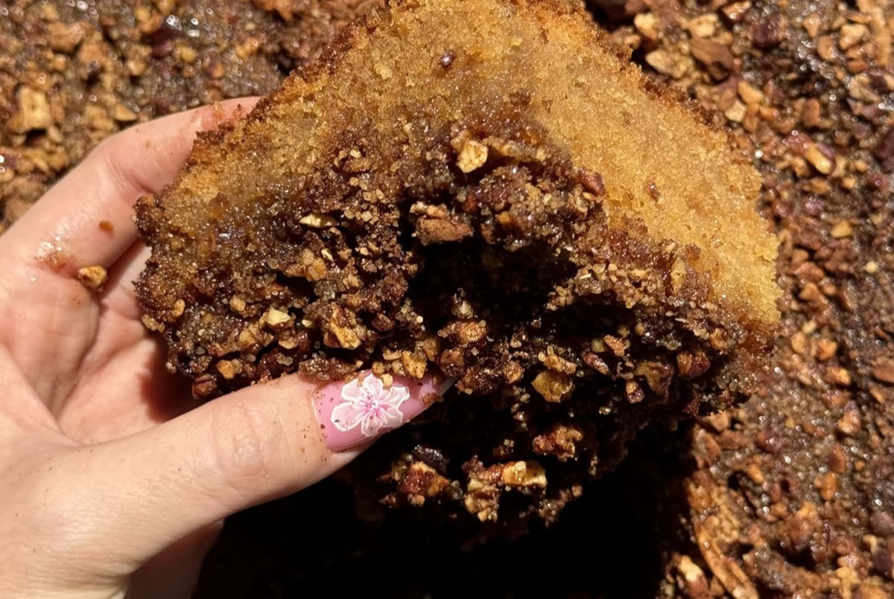

עוגת מייפל דבש פקאן
160 מעלות טורבו · 50–60 דקות · תבנית מרובעת 24 ס"מ
🌱 פרווהמצרכים
- 4 ביצים L
- ½ כוס סוכר
- ½ כוס דבש
- ½ כוס (100 גרם) שמן
- 1 כוס מיץ תפוזים
- 2 כוסות + 1 כף (300 גרם) קמח לבן
- 1 שקית (10 גרם) אבקת אפייה
- 1 כף תמצית וניל
ציפוי
- ½ כוס פקאנים (או כל אגוז אחר)
- ¼ כוס סוכר דמררה
- 1 כף קינמון (לא חובה)
זיגוג
- סירופ מייפל
אופן ההכנה
- מחממים תנור ל־160 מעלות טורבו. לא משמנים את התבנית.
- מקציפים ביצים, דבש וסוכר במהירות גבוהה עד שהתערובת בהירה, סמיכה ואוורירית.
- מורידים למהירות נמוכה-בינונית ומוסיפים את השמן בזרם דק.
- מוסיפים וניל ומיץ תפוזים ומערבבים במהירות נמוכה רק עד שהתערובת אחידה.
- מוסיפים קמח ואבקת אפייה ומקפלים בעדינות, רק עד שאין גושים, כדי לא להוריד את האוויר מהביצים.
- בקערה קטנה מערבבים פקאנים, דמררה וקינמון.
- יוצקים את הבלילה לתבנית ומפזרים מעל את הציפוי.
- אופים 50–60 דקות, עד שקיסם שננעץ במרכז יוצא יבש.
- כשהעוגה עוד חמה, מחוררים אותה בסכין ויוצקים מעל סירופ מייפל.
הערות
- אפשר להחליף את מיץ התפוזים בחלב (ואז העוגה חלבית).
- אפשר לאפות בתבנית חד־פעמית מלבנית בינונית או בשתי תבניות אינגליש קייק. בשתי תבניות מתחילים לבדוק אחרי 35 דקות.
- יוצאות כ־30 חתיכות.
מקור: קורל חוטה